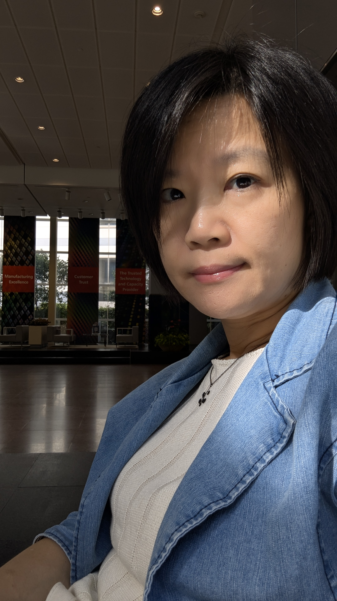
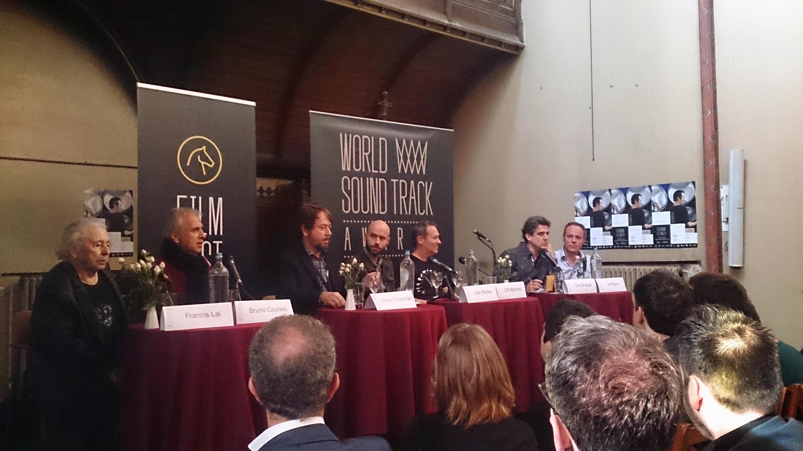
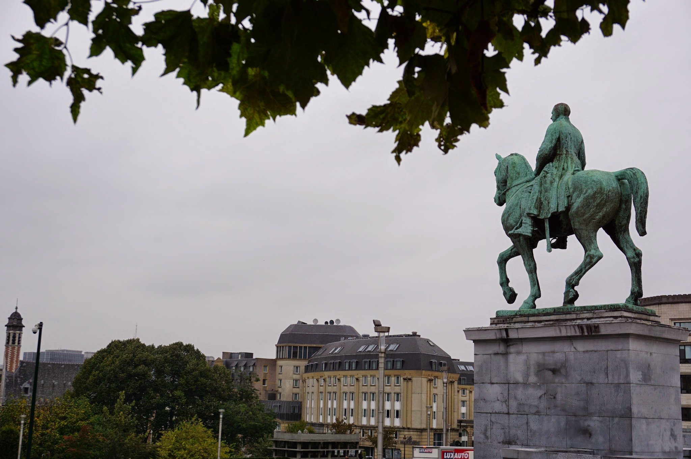
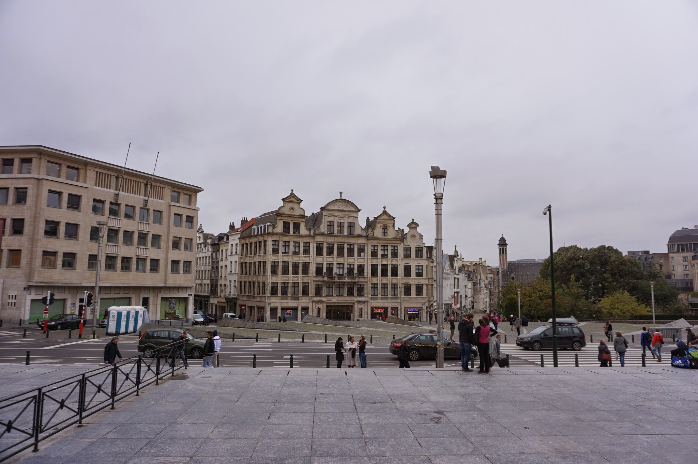
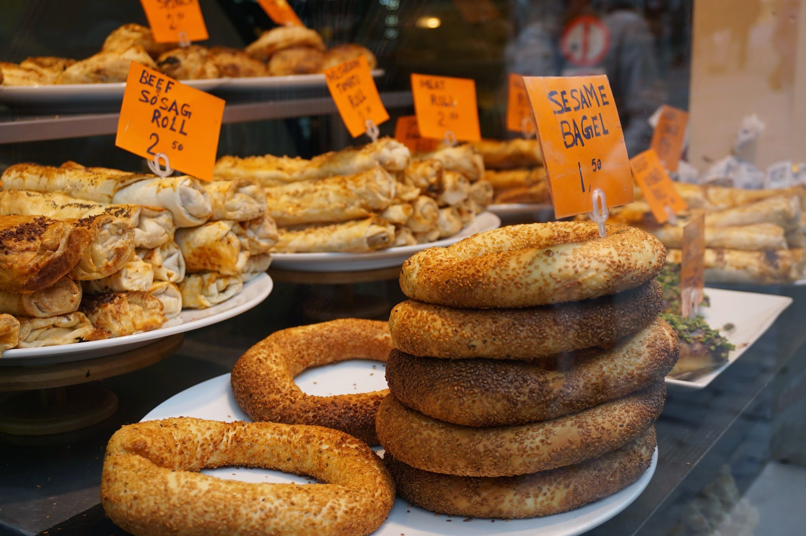

Leadership Interviews
深度採訪企業領袖，挖掘品牌核心價值
曾親身採訪並撰寫台積電、宏碁、台北榮總、佳世達等企業與機構領袖的專訪內容。透過深入訪談與觀點梳理，挖掘領導者的思維、企業的核心競爭力，以及技術創新背後的價值與願景，將專業實力轉化為具有觀點、溫度與辨識度的品牌敘事。
- 台積電
- 宏碁
- 台北榮總
- 佳世達
＊以上為曾採訪其領袖之企業與機構名稱，屬採訪撰稿工作，非品牌商業合作聲明。
Content Strategy · In-depth Interview · Brand Narrative
以深度採訪、內容策略與跨媒體整合，將複雜專業轉化為清晰、有影響力的品牌敘事。
十年新聞採訪、科技傳播、刊物編輯與 Podcast 製作經驗，協助企業、組織與專業人士，把「做得好」變成「被理解、被記住」。
Core Domains｜核心領域
02 · About

以內容創造價值，
讓專業被理解，讓品牌被看見。
我是 Mesple Wang，深耕內容產製與品牌溝通領域十年，專注於科技、文化與生活領域的內容包裝、敘事策劃與整合行銷。我擅長從複雜的資訊中提煉核心價值，將專業知識轉化為易於理解、值得傳播且具有影響力的內容，協助企業與品牌建立清晰的溝通定位，讓好技術、好理念與好故事被更多人看見。
Career Path
從第一線新聞採訪，到科技產業的公關傳播、專業刊物編輯與聲音內容製作，累積了從議題洞察、資訊梳理、內容企劃到品牌傳播的完整實務經驗，能夠兼顧內容的準確性、可讀性與傳播效益。
ROLE 01 · NEWS
第一線新聞採訪，建立議題洞察、事實查核與快速梳理資訊的基本功。
ROLE 02 · PR
站在科技研發與大眾之間，負責科技產業的公關傳播。
ROLE 03 · EDITORIAL
主導專業刊物的內容企劃與編輯，將技術語言轉譯為讀者能理解的產業觀點。
ROLE 04 · AUDIO
以聲音內容延伸科技議題的觸及範圍與溝通溫度。
Leadership Interviews
曾親身採訪並撰寫台積電、宏碁、台北榮總、佳世達等企業與機構領袖的專訪內容。透過深入訪談與觀點梳理，挖掘領導者的思維、企業的核心競爭力，以及技術創新背後的價值與願景，將專業實力轉化為具有觀點、溫度與辨識度的品牌敘事。
＊以上為曾採訪其領袖之企業與機構名稱，屬採訪撰稿工作，非品牌商業合作聲明。
Podcast Highlight
Top 10
Apple Podcasts 科技類
好的內容不只是資訊的傳遞，更是品牌與受眾建立理解、信任與連結的起點。持續探索文字、聲音與跨媒體整合的可能性，讓內容不只被看見、被聽見，更能形成長期的品牌價值。
What I Connect
01
專業 × 受眾
02
內容 × 策略
03
創新 × 信任
透過精準的內容定位、扎實的採訪編輯能力與整合行銷思維，讓每一個值得被傳遞的理念，都能找到最適合的表達方式，創造持續且具體的溝通價值。
03 · Services
讓專業轉化為影響力，
讓內容創造品牌價值
在資訊快速流動的時代，好的內容不只是傳遞訊息，更是建立品牌信任、深化受眾連結與創造長期價值的關鍵。
憑藉十年新聞採訪、科技傳播、刊物編輯與 Podcast 製作經驗，專注於科技、理財、文化與生活等領域的內容整合行銷，從複雜資訊中提煉核心觀點，將艱深的知識轉化為清晰易懂、具有傳播力的內容，讓專業實力有效觸及目標受眾。
不只協助產出內容，更致力於建立可持續運作的內容機制，讓知識得以累積、觀點持續擴散，並將內容影響力轉化為品牌競爭力。
SERVICE 01
從品牌定位與目標受眾出發，規劃內容主軸、形式組合與發布節奏，讓每一份內容都朝同一個溝通目標前進。
適合當你遇到
內容做了很多，卻看不出累積與方向。
SERVICE 02
以新聞採訪的提問與查證方法，深入梳理領導者觀點、技術脈絡與組織故事，撰寫準確且好讀的專訪與專文。
適合當你遇到
技術或理念很強，但寫出來沒人看得懂。
SERVICE 03
提煉品牌的核心價值與差異化，建立一致的敘事架構與語言，讓企業理念轉化為有觀點、有溫度的故事。
適合當你遇到
說不清楚自己和競爭者到底哪裡不同。
SERVICE 04
協助規劃與發行自有刊物、電子報及社群內容，建立選題機制、編輯流程與發布節奏，讓內容可長期穩定運作。
適合當你遇到
想經營自有媒體，但缺少編輯方法與持續力。
SERVICE 05
從節目定位、單元架構、來賓企劃到訪綱設計，以主持《科技解壓縮》的實戰經驗，打造有辨識度的聲音品牌。
適合當你遇到
想做 Podcast，卻不確定要談什麼、怎麼談。
04 · Portfolio
從企業領袖專訪到 Podcast 節目，呈現把專業轉化為好內容的實際成果。
待補 標示之卡片為展示結構，作品資料補齊後即替換。
Field Notes · Visual Archive
把訪談、觀察與行走途中遇見的人事物，整理成一組可持續延伸的內容影像。




05 · Insights
科技與產業觀察、內容策略與品牌溝通，以及理財、文化與生活風格的長期思考。
06 · Content Marketing
從策略規劃、深度採訪到自有媒體與聲音內容，打造具有長期價值的品牌敘事。
依據品牌階段與商業目標，規劃全年度或專案型內容傳播架構。整合文字、影音與跨平台管道，確保每一筆產出都具有戰略意義。
結合新聞記者的敏銳提問與研究能力，親身採訪企業領袖、技術專家或關鍵人物，梳理核心思維，產出具深度與溫度的旗艦文章。
專案刊物主編級經驗導入。從專題企劃、大綱規劃、稿件審定到排版美學監督，打造具長期收藏價值與影響力的企業自有媒體刊物。
憑藉《科技解壓縮》榮獲 Apple Podcasts 科技榜 Top 10 的實戰經驗，提供節目定位、人物訪綱規劃、說故事節奏與跨媒體聲量擴散策略。
06 · Contact
無論是內容策略、深度採訪、品牌敘事或跨媒體內容合作，歡迎預約交流，討論如何讓專業價值轉化為更具影響力的品牌內容。
將開啟 Google 日曆預約頁面，選擇方便的時段即可。